안경원의 일에서, 고객의 일상까지.스크롤하여 살펴보기
이야기에는,
어울리는 장면이 있습니다.
매장을 이해하는 일부터
고객에게 전하는 방식까지.

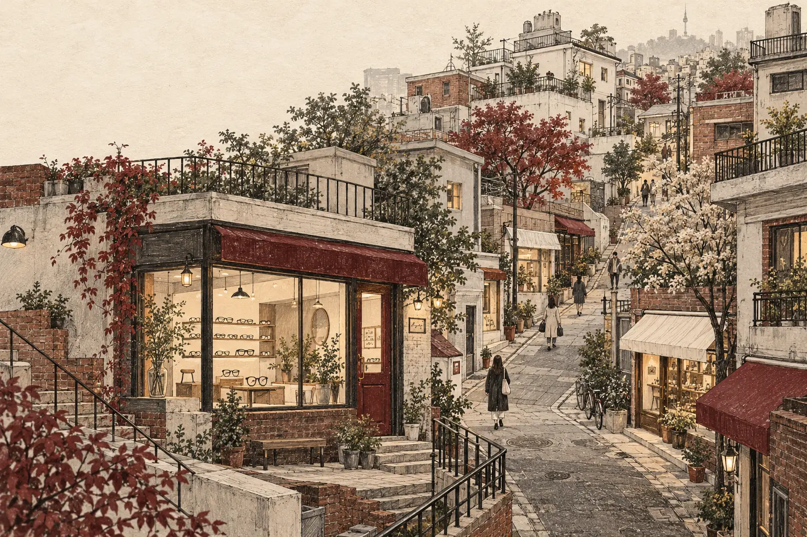

먼저, 안경원의 일을 봅니다.
어떤 안경을 다루는지, 무엇을 꼼꼼하게 살피는지. 콘텐츠의 출발점은 안경원의 실제 업무입니다.
설명할 내용을, 읽히는 장면으로.
안경 제작 사례를 한 편의 글로, 전하고 싶은 소식을 사진과 영상으로. 내용에 맞는 표현을 찾습니다.
고객이 살펴볼 곳에 놓습니다.
블로그에서 읽고, SNS에서 만나고, 지도에서 찾아볼 수 있도록. 채널마다 필요한 정보를 정리합니다.
고또마케팅이 쌓아온 기록
- 안경 제작 사례 작성
- 5,000건+
- 메인 품목 재계약률
- 100%
- 전문성 만족도
- 98%
- 에실로 얼티밋 전국 순위
- 2위
고또마케팅이 하는 일
읽고, 보고,
찾아올 수 있도록.
안경원에 필요한 콘텐츠와 채널을
하나씩 살펴보세요.

고객과 나눈 대화
함께 일한 뒤,
남겨주신 말들.
함께 만든 콘텐츠에 대해
고객이 직접 남겨주신 반응입니다.

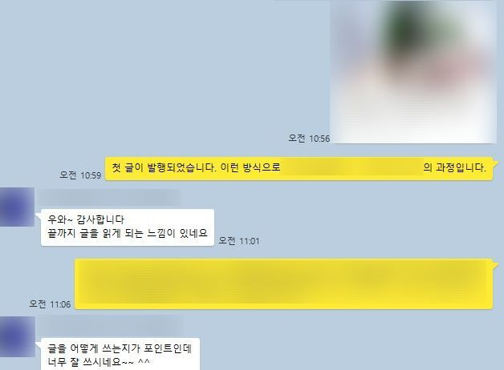


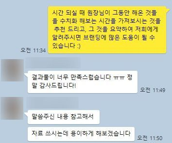


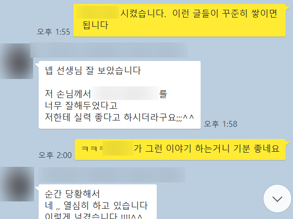

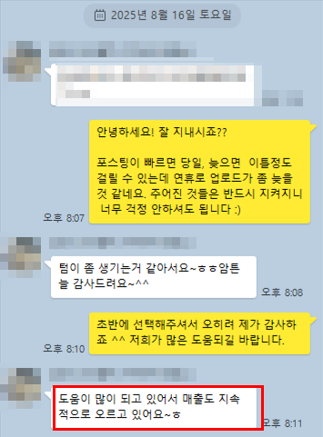

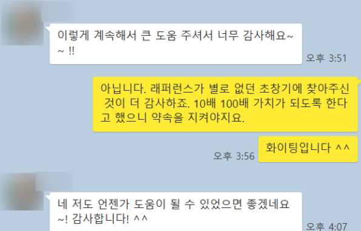

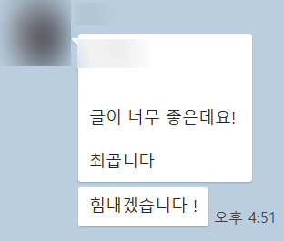


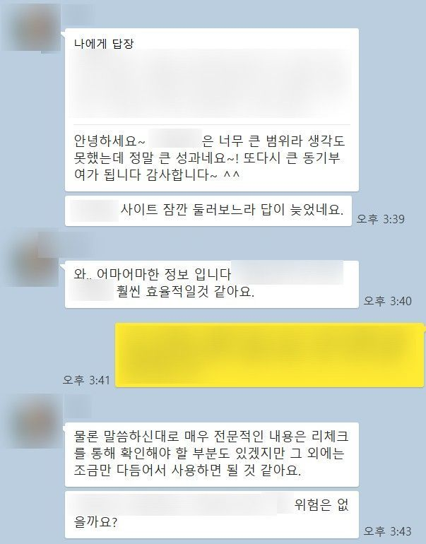


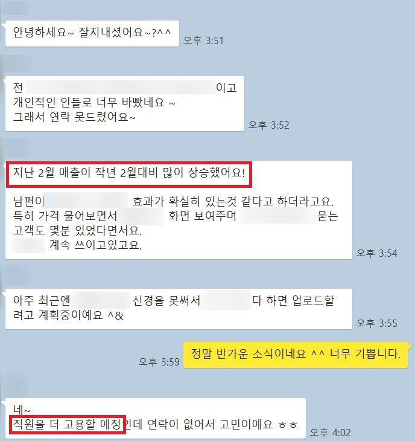


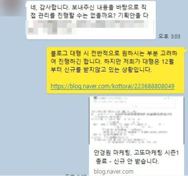


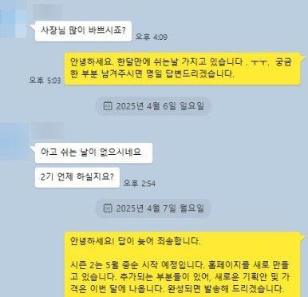
개별 고객의 경험이며,
모든 안경원에 같은 결과를 약속하지 않습니다.